Nuovi materiali
Qui compaiono per prime le mie schede più recenti. L'elenco si aggiorna automaticamente.
48 materiali

Urali – Scheda: testo con spazi vuoti, comprensione all'ascolto e crucipuzzle

Uovo di Pasqua – Scheda: testo con spazi vuoti, comprensione all'ascolto e crucipuzzle

Unità di misura – Scheda: testo con spazi vuoti, comprensione all'ascolto e crucipuzzle

Uniforme – Scheda: testo con spazi vuoti, comprensione all'ascolto e crucipuzzle

Unicorno – Scheda: testo con spazi vuoti, comprensione all'ascolto e crucipuzzle

Umorismo – Scheda: testo con spazi vuoti, comprensione all'ascolto e crucipuzzle

Uluṟu – Scheda: testo con spazi vuoti, comprensione all'ascolto e crucipuzzle

Ulisse – Scheda: testo con spazi vuoti, comprensione all'ascolto e crucipuzzle
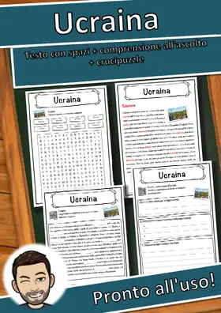
Ucraina – Scheda: testo con spazi vuoti, comprensione all'ascolto e crucipuzzle
UNICEF – Scheda: testo con spazi vuoti, comprensione all'ascolto e crucipuzzle
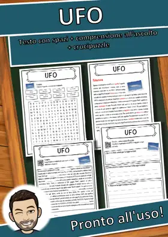
UFO – Scheda: testo con spazi vuoti, comprensione all'ascolto e crucipuzzle
Tyrannosaurus – Scheda: testo con spazi vuoti, comprensione all'ascolto e crucipuzzle
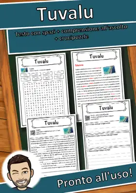
Tuvalu – Scheda: testo con spazi vuoti, comprensione all'ascolto e crucipuzzle
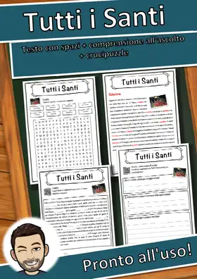
Tutti i Santi – Scheda: testo con spazi vuoti, comprensione all'ascolto e crucipuzzle
Tutankhamon – Scheda: testo con spazi vuoti, comprensione all'ascolto e crucipuzzle
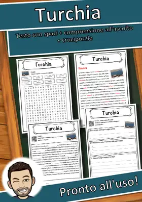
Turchia – Scheda: testo con spazi vuoti, comprensione all'ascolto e crucipuzzle
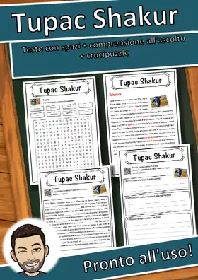
Tupac Shakur – Scheda: testo con spazi vuoti, comprensione all'ascolto e crucipuzzle
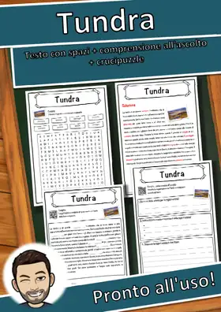
Tundra – Scheda: testo con spazi vuoti, comprensione all'ascolto e crucipuzzle
Tulipa – Scheda: testo con spazi vuoti, comprensione all'ascolto e crucipuzzle
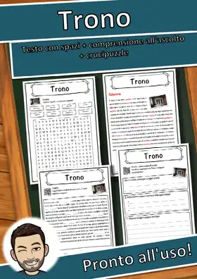
Trono – Scheda: testo con spazi vuoti, comprensione all'ascolto e crucipuzzle
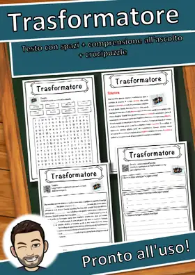
Trasformatore – Scheda: testo con spazi vuoti, comprensione all'ascolto e crucipuzzle
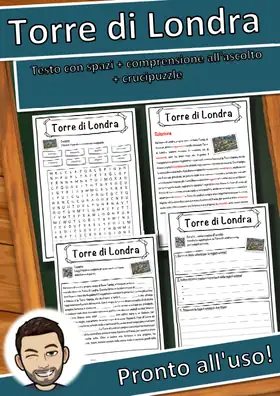
Torre di Londra – Scheda: testo con spazi vuoti, comprensione all'ascolto e crucipuzzle
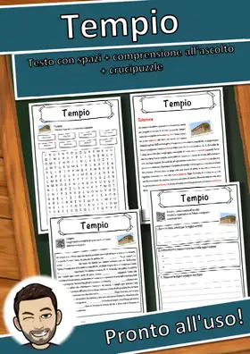
Tempio – Scheda: testo con spazi vuoti, comprensione all'ascolto e crucipuzzle
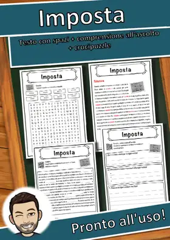
Imposta – Scheda: testo con spazi vuoti, comprensione all'ascolto e crucipuzzle
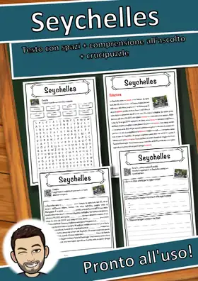
Seychelles – Scheda: testo con spazi vuoti, comprensione all'ascolto e crucipuzzle
Roccia sedimentaria – Scheda: testo con spazi vuoti, comprensione all'ascolto e crucipuzzle
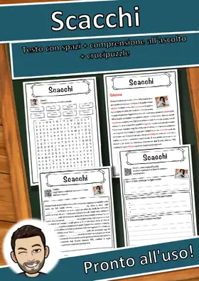
Scacchi – Scheda: testo con spazi vuoti, comprensione all'ascolto e crucipuzzle
Teoria della relatività – Scheda: testo con spazi vuoti, comprensione all'ascolto e crucipuzzle
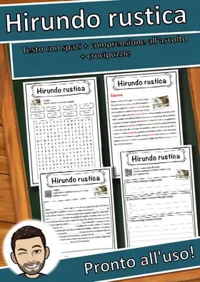
Hirundo rustica – Scheda: testo con spazi vuoti, comprensione all'ascolto e crucipuzzle
Sterlina britannica – Scheda: testo con spazi vuoti, comprensione all'ascolto e crucipuzzle
Moscovio – Scheda: testo con spazi vuoti, comprensione all'ascolto e crucipuzzle
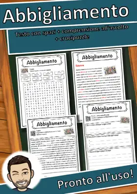
Abbigliamento – Scheda: testo con spazi vuoti, comprensione all'ascolto e crucipuzzle
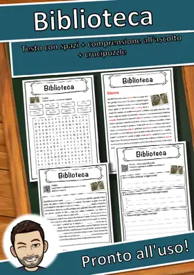
Biblioteca – Scheda: testo con spazi vuoti, comprensione all'ascolto e crucipuzzle
Cesena
Cesena – Scheda: testo con spazi vuoti, comprensione all'ascolto e crucipuzzle
Ancona
Ancona – Scheda: testo con spazi vuoti, comprensione all'ascolto e crucipuzzle
Piacenza
Piacenza – Scheda: testo con spazi vuoti, comprensione all'ascolto e crucipuzzle
Terni
Terni – Scheda: testo con spazi vuoti, comprensione all'ascolto e crucipuzzle
Vicenza
Vicenza – Scheda: testo con spazi vuoti, comprensione all'ascolto e crucipuzzle
Forlì
Forlì – Scheda: testo con spazi vuoti, comprensione all'ascolto e crucipuzzle
Pescara
Pescara – Scheda: testo con spazi vuoti, comprensione all'ascolto e crucipuzzle
Trento
Trento – Scheda: testo con spazi vuoti, comprensione all'ascolto e crucipuzzle
Bergamo
Bergamo – Scheda: testo con spazi vuoti, comprensione all'ascolto e crucipuzzle
Monza
Monza – Scheda: testo con spazi vuoti, comprensione all'ascolto e crucipuzzle
Salerno
Salerno – Scheda: testo con spazi vuoti, comprensione all'ascolto e crucipuzzle
Foggia
Foggia – Scheda: testo con spazi vuoti, comprensione all'ascolto e crucipuzzle
Livorno
Livorno – Scheda: testo con spazi vuoti, comprensione all'ascolto e crucipuzzle
Ravenna
Ravenna – Scheda: testo con spazi vuoti, comprensione all'ascolto e crucipuzzle
Reggio Calabria
Reggio Calabria – Scheda: testo con spazi vuoti, ascolto e crucipuzzle
Nessun materiale trovato: prova con un'altra parola o un altro filtro.